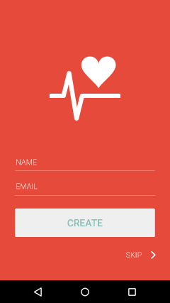
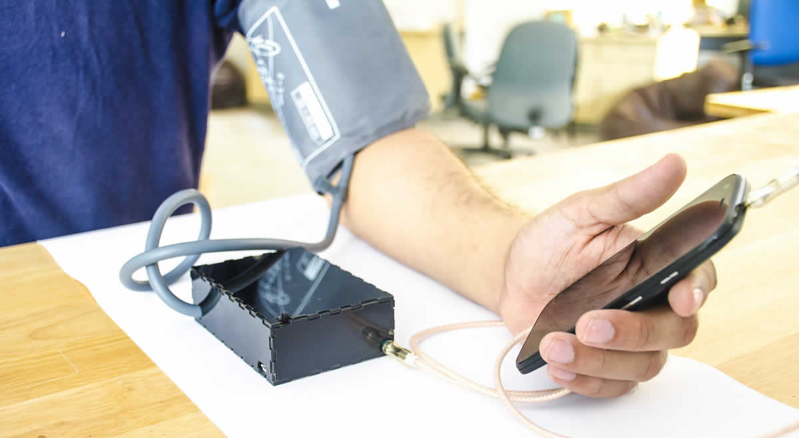
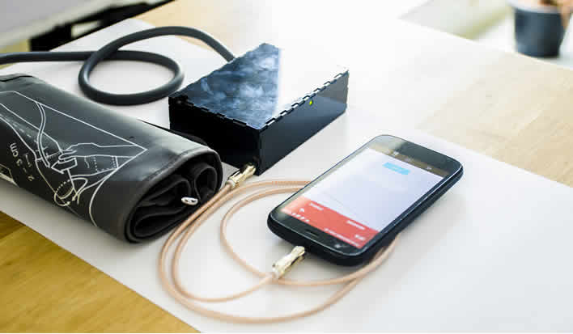

Welfie app
ML-assisted readings, anomaly detection, family history, one-tap sharing and daily reminders.
Home blood pressure monitoring
Welfie is an inexpensive, smartphone-based blood pressure monitor for you and your family — built to remove the hassle of taking BP and sharing readings with your doctor.

The problem
Home BP monitors are fiddly — Bluetooth pairing, apps to open, settings to configure. Many patients, especially older ones, simply give up.
With Welfie
The problem
Patients forget to take their daily BP measurement and record it, leaving gaps in the data their doctor relies on.
With Welfie
The problem
A worrying reading is easy to miss. Without anyone watching the trend, warning signs go unnoticed until the next doctor visit.
With Welfie
The problem
BP history reveals important health issues, but most people keep it in a paper log book that's hard to read and hard to share.
With Welfie
Put on the cuff and plug Welfie into your phone.
The app opens by itself. No pairing, no setup.
Data travels over audio and AI checks it for anomalies.
Your history is saved and shared in one tap.
A small, affordable device and an Android app that does the heavy lifting — built to work as one.

ML-assisted readings, anomaly detection, family history, one-tap sharing and daily reminders.

Minimal electronics keep it small and affordable. Plug it in and the app launches on its own.
Building the blood pressure monitor we'd want for our own families.
CEO / Founder
IIIT Bangalore · Machine Learning
CTO / Founder
Hardware Engineer
CFO / Founder
M.B.B.S., M.D. · Medical Researcher
Founder / Head of Design
IIT Bombay · M.Des Interaction Design
Doctors, clinics, partners or patients — we'd love to hear from you.
Email the team